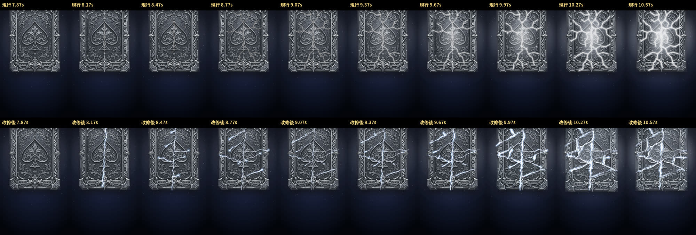
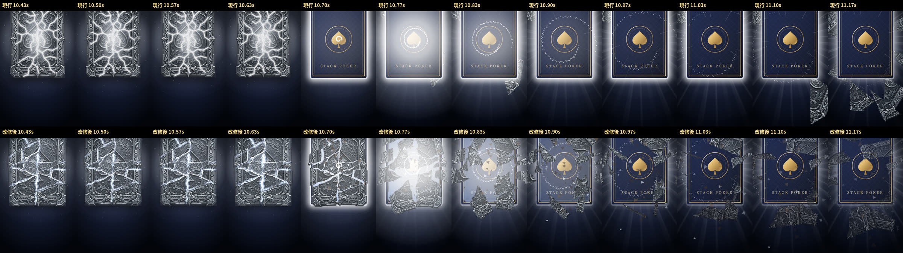

比較は手動の時計で 30fps・1コマずつ描いた映像(390×844)。realtime-*.mp4 は実時間の録画(GPU なしの環境)。音は仮(現行と同じ。合図の時刻は変えていない)
?crack=2 を付けないときは n12 の石板ルートの記録と全474コマ一致。?crack=2 で変わるのは 7.90〜11.90 秒だけ
https://imasanori0111-jpn.github.io/-stack-poker-test-web/gacha-review-stone2/crack-part.mp4
https://imasanori0111-jpn.github.io/-stack-poker-test-web/gacha-review-stone2/shatter-slow.mp4


https://imasanori0111-jpn.github.io/-stack-poker-test-web/gacha-review-stone2/realtime-cur.mp4
https://imasanori0111-jpn.github.io/-stack-poker-test-web/gacha-review-stone2/realtime-v2.mp4